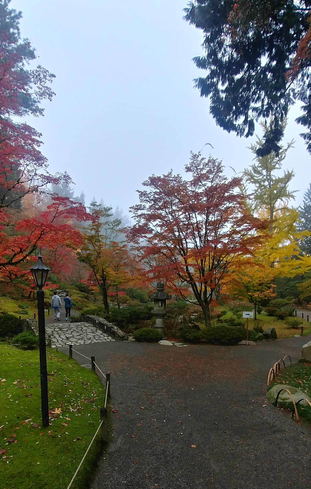
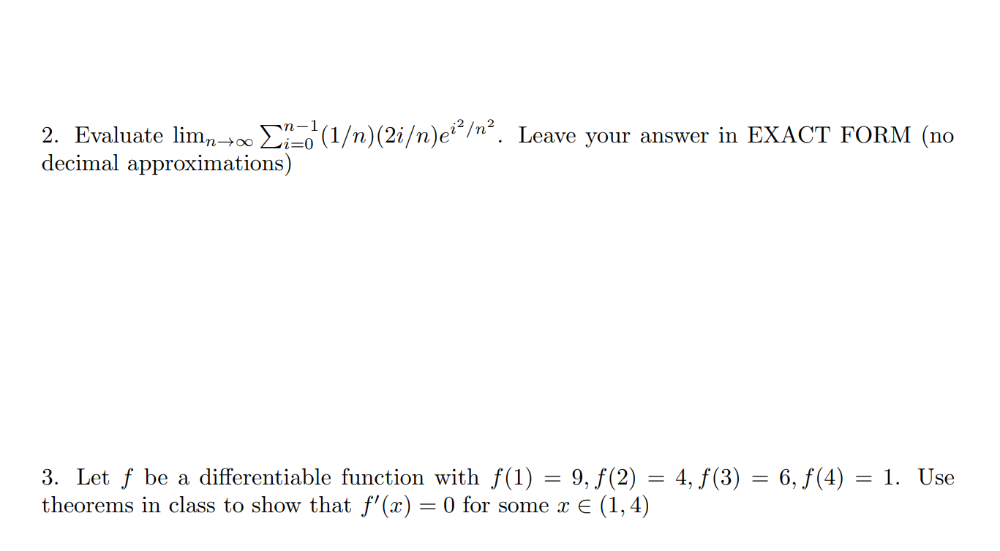
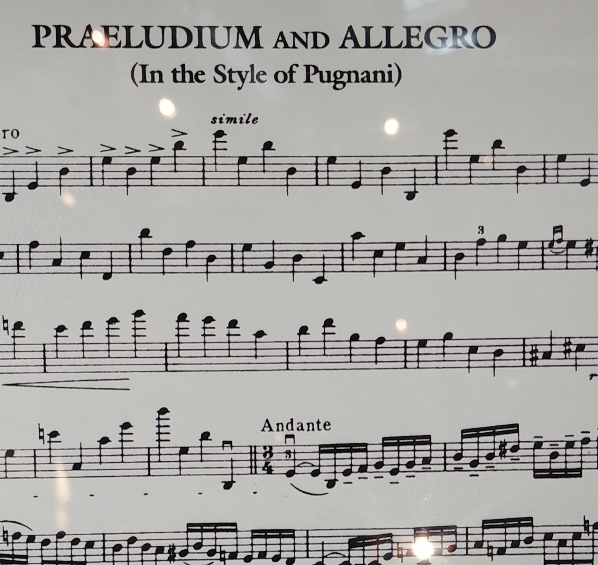
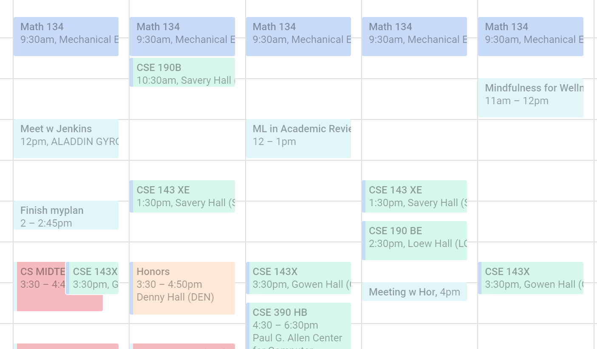

Tranquility
Being at college has given me an opportunity to really enjoy some alone time - to ponder what I'd like to do
with my life, to understand what makes me happy, to reflect on my objectives for university. I went to the tea
garden (alone) hoping for inspiration. The morning was frigid, yet the trees stood stoically and resiliently. I'd
like to say that I had sudden realizations, but I didn't - simply put, going to the tea garden imparted
tranquility, but it did not give a meaning to life. I suspect that finding my purpose will take many years of
trial and error - and I'm ready for it.
Posted 3 Dec 2018. Visited on 27 Oct 2018.

Honors 100 Reflection
You can download my reflection here. The image is of a snowy
landscape
(love them!) I wish Seattle had more hard precipitation, but I will happily accept the rain. :)

Academic Performance
My midterms have all gone well, but I recognized that this was only because my learning style is dependent upon
sharing my knowledge with others: in essence, I learn best by teaching. This is extremely applicable for the rest
of college - I should constantly seek to develop "lesson plans" to teach learned material and subconsciously
reinforce the learned principles. Moreover, it allows me to continue serving others by sharing knowledge. (The
image is from my math midterm - got a perfect!)

The Importance of Violin
Independently pursuing violin has really fueled metacognitive analysis. I ask myself, "Why do I like to play
violin?" and "Does it make me happy?" After reflecting, I realized the violin is deeply embedded in my identity
and that my love for music is a fundamental aspect of who I am. UW has emboldened my tenacity when playing violin
and strengthened my love for music. (The image is of the piece I am currently working on - Praeludium and Allegro
by Kriesler).

Setting a Routine
Oh, the many hours of a day! Now that I have much greater control over my schedule, I recognize how many hours
each day holds - so much time to study (or relax), make friends, and just enjoy the beautiful campus. My calendar
is slowly filling up with events + I'm lucky to have recurring extracurriculars like the CSE Student Advisory
Council. The freedom of my schedule really enforces my sentiment that time must be carefully managed to increase
productivity while still allowing spontaneity and fun!

Hello World!
Hello world!

{kind=link}
{kind=link}
{kind=link}
{kind=link}